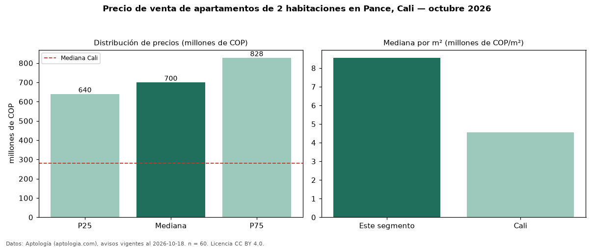

Precio de venta de apartamentos de 2 habitaciones en Pance, Cali — octubre 2026
En Pance, Cali, la mediana de precio de venta de apartamentos de 2 habitaciones es COP 700 millones, según 60 avisos vigentes. Eso es 150 % por encima de la mediana de Cali para apartamentos de 2 habitaciones (COP 280 millones). Por metro cuadrado, la mediana es COP 8,55 millones/m² (n = 60 avisos con área), 88 % por encima de Cali (COP 4,55 millones/m²). Son 12 % de los 485 avisos de apartamentos en venta de la zona, cuya mediana general es COP 950 millones (−26 %). El área mediana anunciada es 80 m². La administración mediana declarada es COP 705.000 al mes (n = 45). El estrato más frecuente es 6 (90 % de los avisos con estrato). La mitad central de los avisos va de COP 640 millones a COP 828 millones (razón 1,3), una dispersión baja. Datos: Aptología (aptologia.com), CC BY 4.0 — https://www.aptologia.com/venta/cali/pance. Archivos: PDF, CSV con las cifras y gráfica PNG.

| Avisos únicos | 60 |
|---|---|
| Percentil 25 | COP 640.000.000 |
| Mediana | COP 700.000.000 |
| Percentil 75 | COP 827.500.000 |
| Mediana por m² | COP 8.552.380 |
Fuente: avisos vigentes de portales inmobiliarios recopilados por Aptología, deduplicados (mínimo 30 avisos únicos por celda). Precios pedidos, no cerrados. Fecha: 2026-10-18.